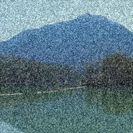

اسٹیٹک

جھلملاتا سرمئی نائز، بغیر سگنل والے ٹی وی کی طرح۔
سیٹنگز
| سیٹنگ | قسم | رینج | ڈیفالٹ |
|---|---|---|---|
| مقدار | نمبر | 0 سے 1 تک | 0.4 |
| سائز | نمبر | 0.5 سے 50 تک | 2 |

جھلملاتا سرمئی نائز، بغیر سگنل والے ٹی وی کی طرح۔
| سیٹنگ | قسم | رینج | ڈیفالٹ |
|---|---|---|---|
| مقدار | نمبر | 0 سے 1 تک | 0.4 |
| سائز | نمبر | 0.5 سے 50 تک | 2 |